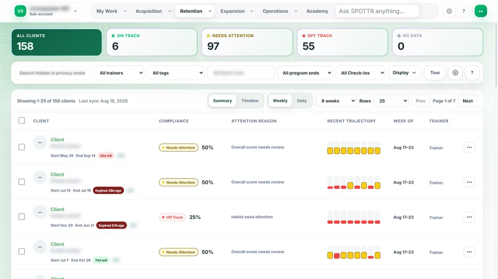

For proven health & fitness businesses at $30K+/month
If 10 New Clients Paid You Next Monday, Who Would Onboard Them?
KIS OS installs the connected journey from demand through sales, onboarding, Trainerize delivery, team execution, retention, KIS Rx, and leadership visibility so more clients do not require more founder coordination.
For established health and fitness businesses with a proven offer, real results, consistent demand, and approximately $30K/month or more in revenue.
Real client proof
See what changes when the founder stops being the system.
Hear directly from health and fitness founders who use KIS OS to connect lead flow, onboarding, coaching delivery, team execution, and the systems behind their next stage.
Success created a systems problem
At $30K+, more demand does not fix the business. It exposes it.
Leads, follow-up, agreements, payments, onboarding, Trainerize, team responsibilities, retention, KIS Rx opportunities, and reporting live across separate tools and manual handoffs.
Tools, handoffs, and workarounds do not connect into one operating system.
You cannot fully trust the business to move without checking, reminding, approving, and personally fixing what falls between the systems.
A successful health business should create more freedom, client impact, and opportunity for the team, not make the founder more essential to every task.
If nobody owns and connects the complete journey, the founder remains the operating system.
If nothing changes
- Leads wait
- Sales create manual work
- Coaches wait for answers
- Payroll grows before capacity
- Delivery drifts
- Retention opportunities disappear
- The founder remains the ceiling
- Growth outruns the business
The risk is not simply inefficiency. It is creating more demand than the current business can reliably convert, deliver, retain, and expand.
Why KIS
You built the demand. We build the operating system around it.
We know what it looks like when a proven health business is still being held together by the founder's memory, messages, spreadsheets, workarounds, and personal follow-through. Another login does not fix the handoffs between them.
KIS OS is the accountable implementation partner across the complete customer journey. We diagnose the constraint, map the system, build and connect the agreed platforms, test the critical handoffs, launch the new operating model, and help the team adopt it.
Tools solve pieces. KIS OS owns the handoffs between them.
The KIS OS effect
Once you are on KIS OS, you never go back.
Join the coaches and founders scaling their business with KIS OS.
“We were actually able to eliminate 4 different subscriptions, which is saving us a lot of time and money by consolidating things through KIS OS. I was honestly surprised by how many options the team made available to help us run much more efficiently and create additional revenue streams.”
“KIS OS brought all of our programs and tech together, making the client onboarding process completely hands-off and rapid. If you are a coach who is stressed out trying to get your technology to talk to each other, do yourself a favor and get with KIS OS.”
“What I love most about working with this team is they map everything out beautifully for us so that there's no question about expectations on both sides. I could not recommend them more if you are looking to build out a CRM to manage all of your workflows, websites, and funnels in one place.”
“Their systems and customer support are absolutely phenomenal, saving both me and my team hours each week. If you want to scale your fitness business with a lean team and the latest in AI and automations, you need to reach out to them.”
“They structured our platform so that once a client purchases a program, the system automatically takes them from point A to point B without needing human intervention. It has been fantastic for allowing us to scale faster and accelerate our online business growth.”
“Before working with KIS, my business felt like a hustle duct-taped together with a thousand different apps, but they built a back-end system that made it legitimately automated and professional. They are consistently on top of their game with immediate action and support whenever I have a question.”
“They completely streamlined our entire program from the moment someone becomes a client to when they start training. I see their services as the catalyst that took my company from a six-figure business to a seven-figure business.”
“They developed an amazing landing page and back-end system that allows my business to scale without me having to constantly worry about daily administrative tasks. By consolidating multiple apps into one, they take all the stress out of automation development.”
“Since moving over to their CRM system, my website is a hundred times better and my conversion rates have gone up a ton. They replaced my error-prone Zapier setups with seamless internal automations, and the team has been incredibly communicative and responsive.”
“Whenever we faced platform limitations, Josh and the team always came up with a brilliant workaround. Now I have a beautiful website and a fully functioning, automated CRM that keeps our business thriving.”
“I have been working with the Keep It Simple team for the past few years, and they have significantly helped me grow and scale my business. My favorite part is our weekly tech calls, where we get to ask questions in real-time and receive immediate feedback.”
“They did so much more than just set up my website; they integrated my calendar, social media, Stripe, and built mind-blowing automations. Their customer service is excellent, always responding the very same day or within 24 hours whenever I need technical support.”
“Josh B. and Josh E. are absolute lifesavers, and I cannot thank them enough for all of their hard work. Our success is only happening because we hired and partnered with this team.”
“This man is THE source for the most insane custom GHL system for our industry. And he's a savant with knowledge of the platform, fixes issues like he's waving a magic wand.”
“So grateful we partnered with KIS to help us with our business! If you are just curious... you owe it to yourself to reach out!”
“I reviewed the mobile versions! All look good to me!! Thank you!! Amazing work! You're so talented, and I'm grateful for your support and expedience! Cheers!”
“This looks great. The other pages are still in development? Thank you so much, you guys continue to raise the bar.”
“I use KISOS and they're awesome.”
Swipe for more
The path forward
Four steps from founder-held complexity to one KIS operating system.
How KIS OS runs the business
The business moves. The team owns it. You lead it.
A qualified lead enters the right pipeline and always has an owner. Payment triggers intake. Onboarding routes the work, creates the client, assigns the coach, and begins Trainerize delivery. The team sees its responsibilities and exceptions. Retention and eligible KIS Rx opportunities surface earlier. Leadership sees the decisions requiring attention.
Life after KIS OS
Before and after.
- Chasing follow-up
- Fixing onboarding exceptions
- Answering preventable team questions
- Reconstructing status
- Troubleshooting vendors
- Personally routing next steps
- One connected operating review
- Defined exception decisions
- Team leadership
- Offer & partnership development
- Client-experience improvement
- Growth strategy
- Only decisions the founder should make
Ownership map
You lead the business. The system moves the work.
One sale in motion
One sale. Eight coordinated actions. No founder handoffs.
- Owner
- System
- Signal
- Revenue signal
- Owner
- System
- Signal
- Activation timer
- Owner
- System
- Signal
- Delivery signal
- Owner
- System to Team
- Signal
- Owner assigned
- Owner
- System
- Signal
- Leadership signal
- Owner
- Team
- Signal
- Client-experience quality
- Owner
- System to Team
- Signal
- Continuation signal
- Owner
- System
- Signal
- Retained client value
KIS Command Center: demonstration
Leadership sees what moved, what is stuck, and who owns next.

Economic leverage
Six levers KIS OS is designed to move.
KIS OS is designed to reduce revenue leakage, repetitive labor, fragmented client experiences, unnecessary coordination, delayed decisions, and founder dependence.
Operating and financial outcomes depend on demand, offer, execution, team adoption, and final implementation scope.
The complete KIS OS installation
One KIS OS installation. Nine connected outcome modules. One accountable team.
KIS OS combines strategy, infrastructure, implementation, integration, testing, launch, and team adoption to turn a proven coaching business into one connected health-brand operating system.
A health brand capable of handling $100K+ opportunity. More demand handled · More client value · More team ownership · Clearer leadership visibility.
Aspirational operating capacity, not a revenue guarantee.
Human-First Team OS · Command Center
Demand-to-Cash · Client Activation · Trainerize Delivery · KIS Rx
KIS OS Capacity Blueprint · Keep · Connect · Improve · Migrate · Launch & Adoption Sprint
Module 1KIS OS Capacity Blueprint
A documented map of what the business must install to handle the next stage.
- What KIS installs
- Full diagnosis, journey audit, priority map, and Now / Next / Later sequence.
- Primary economic lever
- Prevents wrong-order investment.
- What it replaces
- Guessing what to build next; siloed consultant advice.
Module 2Keep · Connect · Improve · Migrate Plan
A responsible decision for every current tool and workflow.
- What KIS installs
- Stack audit, migration plan, integration architecture, and decision log.
- Primary economic lever
- Protects what works, replaces what doesn't.
- What it replaces
- Reckless rip-and-replace.
Module 3Demand-to-Cash Engine
- What KIS installs
- Site, funnels, CRM pipelines, follow-up automation, agreements, and payments.
- Primary economic lever
- Revenue capture speed.
- What it replaces
- Multi-vendor funnel stack + founder chasing.
Module 4Client Activation Engine
New clients move from paid to active without founder involvement.
- What KIS installs
- Onboarding forms, routing, welcome automation, coach assignment.
- Primary economic lever
- Speed to activation.
- What it replaces
- Manual onboarding checklists in messages and spreadsheets.
Module 5Trainerize Delivery Engine
Coaching delivery configured, monitored, and connected to the rest of the business.
- What KIS installs
- Trainerize configuration inside Elite, event routing, coach workflows.
- Primary economic lever
- Delivery capacity per coach.
- What it replaces
- Trainerize as an isolated island.
Module 6KIS Rx Continuation Engine
Eligible clients can continue their transformation inside one connected brand experience.
- What KIS installs
- Intake, eligibility, provider handoff, coaching follow-through, retention signals.
- Primary economic lever
- Client lifetime value & continuation.
- What it replaces
- Outbound referrals that leave the brand experience.
Module 7Human-First Team Operating System
Each team member owns defined work with clear inputs and standards.
- What KIS installs
- Role clarity, SOPs, workflows, review cadence, approved AI assistance.
- Primary economic lever
- Team ownership without founder dependence.
- What it replaces
- Verbal instructions, Slack chaos, and reactive help.
Module 8Command Center Leadership System
Leadership sees what moved, what is stuck, who owns next, and what needs decisions.
- What KIS installs
- Reporting layer, exception flags, cross-journey visibility.
- Primary economic lever
- Leadership capacity.
- What it replaces
- Weekly status reconstruction.
Module 9KIS OS Launch and Adoption Sprint
The system moves into daily use, not documentation.
- What KIS installs
- Critical-handoff testing, launch plan, team enablement, adoption review.
- Primary economic lever
- Adoption speed.
- What it replaces
- Handoff-to-founder-at-end.
The nine modules are components of one installed operating system, not separate purchases or à-la-carte services.
KIS Rx inside KIS OS
Keep more of the client's transformation inside one connected brand experience.
Trainerize powers the coaching journey. KIS Rx extends what the brand can offer. KIS OS connects the business around both.
Clinical decisions and services are provided by applicable licensed providers. Eligibility, availability, and services vary. Prescriptions and outcomes are never guaranteed.
Piecemeal vs KIS OS.
- Strategy consultant
- Website agency
- Funnel builder
- GoHighLevel specialist
- Automation freelancer
- Trainerize consultant
- Operations consultant
- Dashboard builder
- Medical-wellness platform
- Founder as integrator
- One diagnostic
- One documented implementation plan
- One accountable team
- One connected journey
- One testing process
- One launch
- One adoption process
- One leadership operating view
The value is not the number of features. It is that one accountable team makes the important systems work together.
Why KIS OS is a safer investment
Install the operating system without blowing up what already works.
No reckless rip-and-replace. No login dump. No unfinished architecture handed back to the founder.
Most KIS OS implementations are planned around approximately eight weeks. Exact timing depends on scope, access, integrations, migration, data quality, platform limitations, approvals, and team availability, and is confirmed in the proposal.
Architecture · Implementation coordination · Configuration · Workflows · Integrations · Migration planning · Testing · Launch preparation · Team enablement · Agreed adoption support
Platform access · One accountable decision-maker · Timely approvals · Business context · Workflow feedback · Testing participation · Team participation · Commitment to adoption
Business & journey diagnosis · KIS OS Priority Map · Complete Elite operating architecture · Implementation ownership · Testing & launch planning · Team ownership design · Team enablement · Review checkpoints
Website & funnels · CRM & pipeline · Payment & onboarding · Trainerize · Team workflows · Command Center · KIS Rx · Migration & integrations
The Priority Map and proposal define which modules are installed during the first implementation phase.
Later implementation phases · Platform entitlements · Third-party fees · Custom development · New offers or funnels · Future expansion · Ongoing optimization · Change requests
The KIS OS architecture covers the complete operating system. The proposal identifies which modules are installed during the initial launch, which follow later, and the complete cost of both.
Know the investment magnitude before entering the conversation.
KIS OS is a substantial operating-system implementation, not a low-cost software subscription. The complete one-time, recurring, third-party, and later-phase cost structure is provided before the client decides.
- Initial Elite implementation
- Ongoing platform & support
- Typical third-party costs
Custom and later-phase work is confirmed separately in the proposal.
If KIS OS is not the right next step, KIS will say so and identify the prerequisite that should come first.
Before commitment, the proposal defines deliverables, responsibilities, dependencies, entitlements, review checkpoints, ongoing services, and applicable third-party costs.
Agreed critical customer-journey handoffs complete the documented test process before KIS recommends launch, followed by the defined adoption review.
Exclusions: new features, changed scope, client changes, missing or defective source data, third-party outages, unsupported integrations, platform limitations.
We begin the KIS OS installations right away each month/quarter so every build receives architecture, implementation, testing, launch, and adoption attention.
Before increasing ad spend, hiring another team member, launching another offer, or introducing KIS Rx, make sure the current business can carry the opportunity.
If you need KIS OS operating before a specific growth event, bring the date to your Back-Office Breakdown. KIS will say whether the window is realistic.
Step 1: map the constraint
Find the operating gap between today's business and the next stage.
Your Back-Office Breakdown with the KIS team is the first step toward KIS OS. It produces your KIS OS Priority Map: the primary operating constraint, where growth is leaking or returning to the founder, and what KIS OS should install first.
- $100K Capacity Gap Scan
- Client-journey breakpoints
- Keep / Connect / Improve / Migrate direction
- KIS OS installation recommendation
- Written Priority Map summary
- Primary operating constraint
- Founder bottleneck snapshot
- Now / Next / Later sequence
- Candid fit decision
The Priority Map does not replace KIS OS. It determines how KIS OS should be configured and installed.
Common questions
Everything a serious buyer usually asks first.
What exactly is KIS OS?
KIS OS is a done-with-you operating-system installation. It combines diagnosis, architecture, implementation, connected technology, Trainerize delivery, KIS Rx, Command Center visibility, critical-handoff testing, launch, team enablement, and agreed adoption support. The proposal documents the exact configuration and sequence for the business.
Who is KIS OS built for?
Established online health, fitness, nutrition, and coaching businesses with a proven offer, real client results, consistent demand, an existing or growing team, and approximately $30K/month or more in collected revenue. KIS OS is designed to move the business toward $100K+ operating capacity.
What does $100K+ capacity mean?
$100K+ describes the operating capacity and growth stage KIS OS is designed to support. It is not a revenue guarantee. Individual revenue outcomes depend on demand, offer, execution, team, market, adoption, and other business factors.
Does KIS generate demand?
KIS installs and connects the infrastructure demand flows through: positioning, sites, funnels, CRM, follow-up, agreements, payment, onboarding, delivery, retention, and reporting. The client brings the proven offer, market demand, leadership, and execution.
What does implementation require from my team?
KIS carries the architecture, configuration, coordination, integrations, testing, and launch preparation. The owner and team provide platform access, one accountable decision-maker, timely approvals, business context, workflow feedback, testing participation, and commitment to adoption. Specific time commitments are confirmed in the proposal.
What is included in the initial KIS OS launch?
Every KIS OS engagement includes business and journey diagnosis, the KIS OS Priority Map, complete operating architecture, implementation ownership, testing and launch planning, team ownership design, team enablement, and review checkpoints. The Priority Map and proposal define which modules (website, funnels, CRM, payment, onboarding, Trainerize, team workflows, Command Center, KIS Rx, migrations) are installed in the first phase and which follow later.
How are implementation, platform, third-party, and later-phase costs structured?
KIS OS separates the one-time implementation investment, recurring platform and support, applicable third-party expenses, and future expansion work. The complete cost structure is documented before commitment. KIS OS is a substantial operating-system implementation, not a low-cost software subscription.
How do Trainerize, KIS Rx, AI, and the Command Center work together?
Trainerize powers coaching delivery. KIS Rx creates an integrated continuation pathway for eligible clients. Approved AI assists with configured repetitive work; humans remain accountable. The Command Center gives leadership visibility across the enabled journey. KIS OS connects those components around the business so the founder does not have to.
Have a specific question? A Back-Office Breakdown is the fastest way to get an honest answer against your actual business.
The next stage
Your demand can keep creating complexity or it can start creating capacity.
Keep stitching the business together one tool, hire, and workaround at a time, and the founder remains the ceiling.
Install one connected KIS operating system, and the team can move the work while you lead the health brand it is becoming.
You are not trying to become a better operator of chaos. You are becoming the leader of a health brand built to grow beyond your personal capacity.
Find the constraint. Map the sequence. Install the operating system. Lead the next stage.